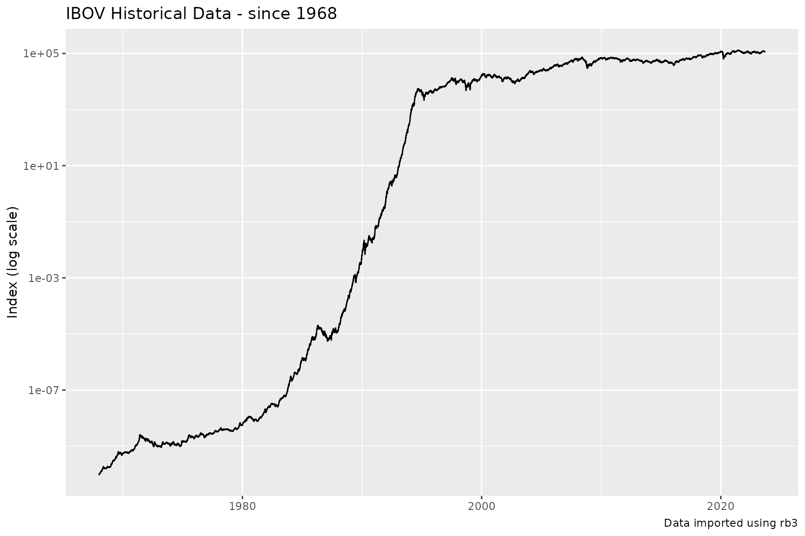
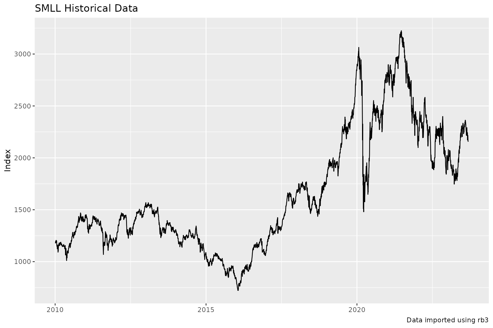

rb3 comes with a diverse range of functions to explore
the index delivered by the B3 Exchange. These functions will be
presented here.
B3 Indexes
The function rb3::indexes_get list the names of
available indexes.
indexes_get()
#> [1] "AGFS" "BDRX" "GPTW" "IBOV" "IBRA" "IBSD" "IBXL" "IBXX" "ICO2" "ICON"
#> [11] "IDIV" "IDVR" "IEEX" "IFIL" "IFIX" "IFNC" "IGCT" "IGCX" "IGNM" "IMAT"
#> [21] "IMOB" "INDX" "ISEE" "ITAG" "IVBX" "MLCX" "SMLL" "UTIL"Indexes Composition and Weights
The composition of B3 indexes are available through the function
rb3::index_weights_get. This function returns a data.frame
with the current compostion of the requested index, all symbols that
compound the index, their weights and theoretical position. Here the
IBOVESPA (IBOV) Index has its composition listed.
index_weights_get("IBOV")
#> # A tibble: 86 × 3
#> symbol weight position
#> <chr> <dbl> <dbl>
#> 1 ABEV3 0.0255 4394245879
#> 2 ALOS3 0.00525 532616595
#> 3 ALPA4 0.00076 166362038
#> 4 ARZZ3 0.00154 62305891
#> 5 ASAI3 0.00857 1349217892
#> 6 AZUL4 0.00171 332825777
#> 7 B3SA3 0.0300 5602790110
#> 8 BBAS3 0.0377 2842247534
#> 9 BBDC3 0.00874 1489259656
#> 10 BBDC4 0.0332 5135772281
#> # ℹ 76 more rowsThe IBr100 Index (IBXX)
index_weights_get("IBXX")
#> # A tibble: 100 × 3
#> symbol weight position
#> <chr> <dbl> <dbl>
#> 1 ABEV3 0.0239 4394245879
#> 2 ALOS3 0.00492 532616595
#> 3 ALPA4 0.00072 166362038
#> 4 ARZZ3 0.00144 62305891
#> 5 ASAI3 0.00803 1349217892
#> 6 AURE3 0.00155 301966319
#> 7 AZUL4 0.0016 332825777
#> 8 B3SA3 0.0281 5602790110
#> 9 BBAS3 0.0353 2842247534
#> 10 BBDC3 0.00818 1489259656
#> # ℹ 90 more rowsThe Small Caps Index (SMLL)
index_weights_get("SMLL")
#> # A tibble: 118 × 3
#> symbol weight position
#> <chr> <dbl> <dbl>
#> 1 ABCB4 0.00565 72245617
#> 2 AESB3 0.0104 317103937
#> 3 AGRO3 0.00564 63815593
#> 4 ALOS3 0.0385 532616595
#> 5 ALPA4 0.00561 166362038
#> 6 ALUP11 0.0152 151478405
#> 7 AMAR3 0.00018 31628685
#> 8 AMBP3 0.00204 55695890
#> 9 ANIM3 0.00337 257038629
#> 10 ARML3 0.00629 171399108
#> # ℹ 108 more rowsIndex Composition
rb3::index_comp_get returns a vector with symbols that
compound the given index.
index_comp_get("SMLL")
#> [1] "ABCB4" "AESB3" "AGRO3" "ALOS3" "ALPA4" "ALUP11" "AMAR3" "AMBP3"
#> [9] "ANIM3" "ARML3" "ARZZ3" "AURE3" "AZEV4" "AZUL4" "BEEF3" "BLAU3"
#> [17] "BMOB3" "BPAN4" "BRAP4" "BRSR6" "CAML3" "CASH3" "CBAV3" "CEAB3"
#> [25] "CIEL3" "CLSA3" "COGN3" "CSMG3" "CURY3" "CVCB3" "CYRE3" "DASA3"
#> [33] "DIRR3" "DXCO3" "ECOR3" "ENAT3" "EVEN3" "EZTC3" "FESA4" "FLRY3"
#> [41] "FRAS3" "GFSA3" "GGPS3" "GOAU4" "GRND3" "GUAR3" "HBSA3" "IFCM3"
#> [49] "IGTI11" "INTB3" "IRBR3" "JALL3" "JHSF3" "KEPL3" "LAVV3" "LEVE3"
#> [57] "LJQQ3" "LOGG3" "LWSA3" "MATD3" "MBLY3" "MDIA3" "MDNE3" "MGLU3"
#> [65] "MILS3" "MLAS3" "MOVI3" "MRFG3" "MRVE3" "MTRE3" "MYPK3" "ODPV3"
#> [73] "ONCO3" "ORVR3" "PCAR3" "PETZ3" "PGMN3" "PLPL3" "PNVL3" "POMO4"
#> [81] "PORT3" "POSI3" "PTBL3" "QUAL3" "RANI3" "RAPT4" "RCSL3" "RECV3"
#> [89] "ROMI3" "RRRP3" "SAPR11" "SBFG3" "SEER3" "SIMH3" "SLCE3" "SMFT3"
#> [97] "SMTO3" "SOMA3" "SRNA3" "STBP3" "TAEE11" "TASA4" "TEND3" "TGMA3"
#> [105] "TRIS3" "TTEN3" "TUPY3" "UNIP6" "USIM3" "USIM5" "VAMO3" "VIVA3"
#> [113] "VLID3" "VULC3" "VVEO3" "WIZC3" "YDUQ3" "ZAMP3"Index by Segment
rb3::index_by_segment_get returns a data.frame with all
stocks that are in the index, their economic segment, weights, position
and segment weight in the index.
index_by_segment_get("IBOV")
#> # A tibble: 86 × 6
#> symbol segment weight segment_weight position refdate
#> <chr> <chr> <dbl> <dbl> <dbl> <date>
#> 1 WEGE3 Bens Indls / Máqs e Equips 0.0321 0.0321 1.48e9 2024-07-15
#> 2 EMBR3 Bens Indls / Mat Transporte 0.0140 0.0140 7.35e8 2024-07-15
#> 3 AZUL4 Bens Indls/Transporte 0.00139 0.0206 3.33e8 2024-07-15
#> 4 CCRO3 Bens Indls/Transporte 0.0061 0.0206 9.95e8 2024-07-15
#> 5 RAIL3 Bens Indls/Transporte 0.0131 0.0206 1.22e9 2024-07-15
#> 6 BRFS3 Cons N Básico / Alimentos… 0.00886 0.031 8.35e8 2024-07-15
#> 7 JBSS3 Cons N Básico / Alimentos… 0.0172 0.031 1.13e9 2024-07-15
#> 8 MRFG3 Cons N Básico / Alimentos… 0.00192 0.031 3.32e8 2024-07-15
#> 9 BEEF3 Cons N Básico / Alimentos… 0.00084 0.031 2.61e8 2024-07-15
#> 10 SMTO3 Cons N Básico / Alimentos… 0.00218 0.031 1.42e8 2024-07-15
#> # ℹ 76 more rowsIndexes Time Series
rb3 downloads data from B3 website to build time series
for B3 indexes.
The function rb3::index_get downloads data from B3 for
the given index name and returns data structured in a data.frame. The
index names are obtained with rb3::indexes_get
function.
index_name <- "IBOV"
index_data <- index_get(index_name, as.Date("2019-01-01"))
head(index_data)
#> # A tibble: 6 × 3
#> refdate index_name value
#> <date> <chr> <dbl>
#> 1 2019-02-01 IBOV 97861.
#> 2 2019-03-01 IBOV 94604.
#> 3 2019-04-01 IBOV 96054.
#> 4 2019-07-01 IBOV 101340.
#> 5 2019-08-01 IBOV 102126.
#> 6 2019-10-01 IBOV 104053.The returned data.frame has three columns: refdate,
index_name and value.
index_data |>
ggplot(aes(x = refdate, y = value)) +
geom_line() +
labs(
x = NULL, y = "Index",
title = str_glue("{index_name} Historical Data"),
caption = str_glue("Data imported using rb3")
)
The IBOVESPA index starts at 1968 and the series is adjusted for all economic events the that affected the Brazilian currency in the 80-90’s decades.
index_data <- index_get(index_name, as.Date("1968-01-01"))
index_data |>
ggplot(aes(x = refdate, y = value)) +
geom_line() +
scale_y_log10() +
labs(
x = NULL, y = "Index (log scale)",
title = str_glue("{index_name} Historical Data - since 1968"),
caption = str_glue("Data imported using rb3")
)
The y-axis was transformed to log scale in order to get the visualization improved.
Change index_name to get data for other indexes, for
example, the Small Caps Index SMLL.
index_name <- "SMLL"
index_data <- index_get(index_name, as.Date("2010-01-01"))
index_data |>
ggplot(aes(x = refdate, y = value)) +
geom_line() +
labs(
x = NULL, y = "Index",
title = str_glue("{index_name} Historical Data"),
caption = str_glue("Data imported using rb3")
)
Indexes Last Update
rb3::indexes_last_update returns the date where the
indexes have been last updated.
indexes_last_update()
#> [1] "2024-07-15"